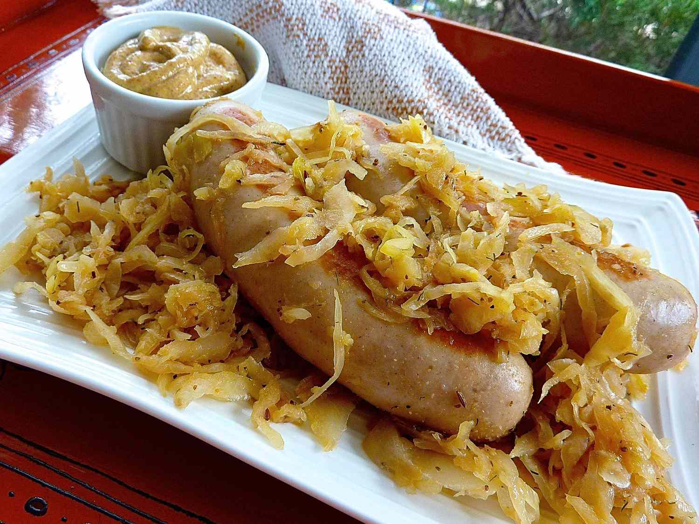

Beer Glazed Brats And Sauerkraut

I came up with this recipe for brats and sauerkraut because simply simmering sausages in beer and onions tasted weak. I was looking for a more intense beer flavor with a little bite, and this is it. It's a very satisfying dish if you crave German flavor that's Americanized. We love this dish served on potato rolls with spicy hot German mustard, Swiss cheese, and an ice-cold beer on the side.
Ingredients
- ⅛ teaspoon celery seeds
- ⅛ teaspoon caraway seeds
- 1 (12 fluid ounce) can or bottle lager beer
- 1 tablespoon light brown sugar
- 2 teaspoons dry mustard powder
- 1 teaspoon onion powder
- ⅛ teaspoon ground black pepper
- ⅛ teaspoon dried dill weed
- 1 pound fresh bratwurst sausages
- 1 pound sauerkraut
Steps
- Crush celery seeds and caraway seeds with a mortar and pestle until ground.
- Mix beer, brown sugar, dry mustard, onion powder, pepper, dill, and crushed seeds together in a bowl until brown sugar is dissolved.
- Place brats into a large nonstick skillet over medium heat. Pour beer mixture over top and bring to a boil. Reduce the heat to low, cover, and simmer for 10 minutes.
- Uncover and increase the heat to medium. Boil the sauce until it reduces to a thick, syrupy liquid, about 20 minutes. Tilt the skillet to roll brats in the sticky sauce until thoroughly coated. Transfer brats to a plate and cover to keep warm.
- Add sauerkraut to the skillet and stir to combine with any leftover sauce; cook for 5 to 8 minutes. Transfer sauerkraut to a serving platter and top with warm brats.